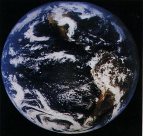
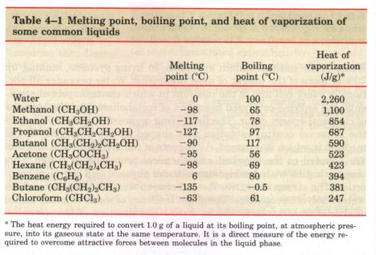
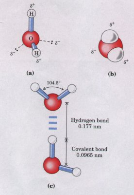
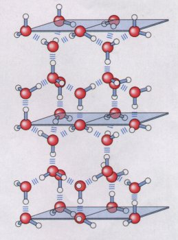
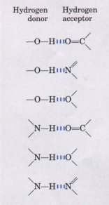
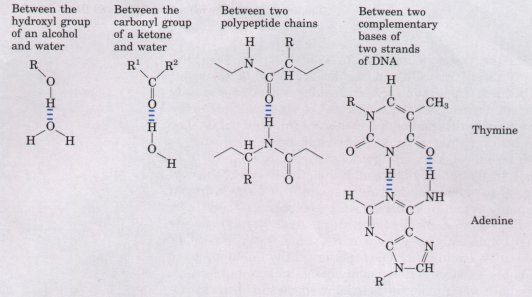
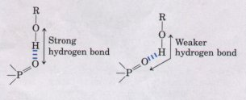
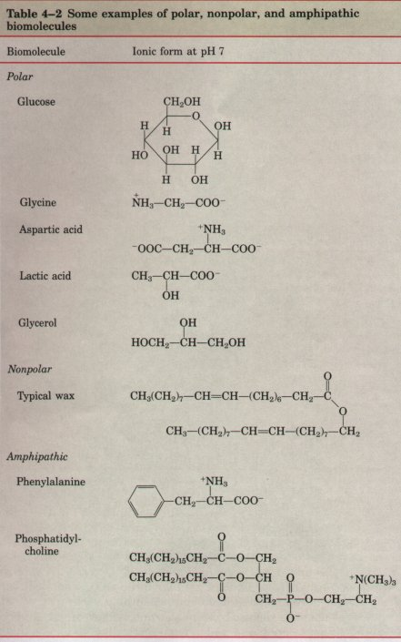
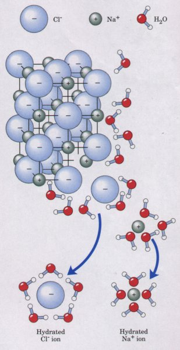
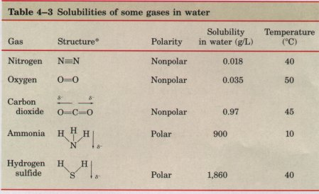

Water is the most abundant substance in living systems, making up 70% or more of the weight of most organisms. Water pervades all portions of every cell and is the medium in which the transport of nutrients, the enzyme-catalyzed reactions of metabolism, and the transfer of chemical energy occur. The first living organisms probably arose in the primeval oceans; evolution was shaped by the properties of the medium in which it occurred. All aspects of cell structure and function are adapted to the physical and chemical properties of water. This chapter begins with descriptions of these physical and chemical properties. The strong attractive forces between water molecules result in water's solvent properties. The slight tendency of water to ionize is also of crucial importance to the structure and function of biomolecules, and we will review the topic of ionization in terms of equilibrium constants, pH, and titration curves. Finally, we will consider the way in which aqueous solutions of weak acids or bases and their salts act as buffers against pH changes in biological systems. The water molecule and its ionization products, H+ and OH -, profoundly influence the structure, self assembly, and properties of all cellular components, including enzymes and other proteins, nucleic acids, and lipids. The noncovalent interactions responsible for the specificity of "recognition" among biomolecules are decisively influenced by the solvent properties of water.
| Hydrogen bonds between water molecules provide the cohesive forces that make water a liquid at room temperature and that favor the extreme ordering of molecules typical of crystalline water (ice). Polar biomolecules dissolve readily in water because they can replace energetically favorable water-water interactions with even more favorable water-solute interactions (hydrogen bonds and electrostatic interactions). In contrast, nonpolar biomolecules interfere with favorable water-water interactions and are poorly soluble in water. In aqueous solutions, these molecules tend to cluster together to minimize the energetically unfavorable effects of their presence. |  This view of the earth from space shows that most of the planet's surface is covered with water. The seas, where living organisms probably first arose, are today the habitat of countless modern organisms. |
Hydrogen bonds and ionic, hydrophobic (Greek, "water-fearing"), and van der Waals interactions, although individually weak, are numerous in biological macromolecules and collectively have a very significant influence on the three-dimensional structures of proteins, nucleic acids, polysaccharides, and membrane lipids. Before we begin a detailed discussion of these biomolecules in the following chapters, it useful to review the properties of the solvent, water, in which they a assembled and carry out their functions.
Water has a higher melting point, boiling point, and heat of vapori~ tion than most other common liquids (Table 4-1). These unusual prc erties are a consequence of strong attractions between adjacent wat molecules, which give liquid water great internal cohesion.

* The heat energy required to convert 1.0 g of a liquid at its boiling point, at atmospheric pres sure, into its gaseous state at the same temperature. It is a direct measure of the energy required to overcome attractive forces between molecules in the liquid phase.
What is the cause of these strong intermolecular attractions liquid water? Each hydrogen atom of a water molecule shares an el~ tron pair with the oxygen atom. The geometry of the water molecule dictated by the shapes of the outer electron orbitals of the oxygen ato which are similar to the bonding orbitals of carbon (see Fig. 3-4 These orbitals describe a rough tetrahedron, with a hydrogen atom each of two corners and unshared electrons at the other two (Fig. 4-1) The H-O-H bond angle is 104.5° slightly less than the 109.5° of perfect tetrahedron; the nonbonding orbitals of the oxygen atc slightly compress the orbitals shared by hydrogen.
| The oxygen nucleus attracts electrons
more strongly than does t hydrogen nucleus (i.e., the
proton); oxygen is more electronegative (see Table 3-4).
The sharing of electrons between H and O is therefc
unequal; the electrons are more often in the vicinity of
the oxygen atc than of the hydrogen. The result of this
unequal electron sharing is two electric dipoles in the
water molecule, one along each of the Hbonds; the oxygen
atom bears a partial negative charge (δ-), and ea
hydrogen a partial positive charge (δ+). The resulting
electrostatic ; traction between the oxygen atom of one
water molecule and the 1 drogen of another (Fig. 4-lc)
constitutes a hydrogen bond. Hydrogen bonds are weaker than covalent bonds. The hydrog bonds in liquid water have a bond energy (the energy required break a bond) of only about 20 kJ/mol, compared with 460 kJ/mol i the covalent O-H bond. At room temperature, the thermal energy an aqueous solution (the kinetic energy resulting from the motion individual atoms and molecules) is of the same order as that requir to break hydrogen bonds. When water is heated, its temperate increase reflects the faster motion of individual water molecules. Although at any given time most of the molecules in liquid water are hydrogen-bonded, the lifetime of each hydrogen bond is less than 1 × 10~9 s. The apt phrase "flickering clusters" has been applied to the short-lived groups of hydrogen-bonded molecules in liquid water. The very large number of hydrogen bonds between molecules nevertheless confers great internal cohesion on liquid water. |
 Figure 4-1 The dipolar nature of the H20 molecule, shown (a) by ball-and-stick and (b) by spacefilling models. The dashed lines in (a) represent the nonbonding orbitals. There is a nearly tetrahedral arrangement of the outer shell electron pairs around the oxygen atom; the two hydrogen atoms have localized partial positive charges and the oxygen atom has two localized partial negative charges. (c) Two H20 molecules joined by a hydrogen bond (designated by three blue lines) between the oxygen atom of the upper molecule and a hydrogen atom of the lower one. Hydrogen bonds are longer and weaker than covalent O-H bonds. |
| The nearly tetrahedral arrangement of
the orbitals about the oxygen atom (Fig. 4-la) allows
each water molecule to form hydrogen bonds with as many
as four neighboring water molecules. At any given instant
in liquid water at room temperature, each water molecule
forms hydrogen bonds with an average of 3.4 other water
molecules. The water molecules are in continuous motion
in the liquid state, so hydrogen bonds are constantly and
rapidly being broken and formed. In ice, however, each
water molecule is fixed in space and forms hydrogen bonds
with four other water molecules, to yield a regular
lattice structure (Fig. 4-2). To break the large numbers
of hydrogen bonds in such a lattice requires much thermal
energy, which accounts for the relatively high melting
point of water (Table 4-1). When ice melts orwater
evaporates, heat is taken up by the system : H20(s) -----------
> H2O(l) ΔH=
+5.9kj/mol |
 Figure 4-2 In ice, each water molecule forms the maximum of four hydrogen bonds, creating a regular crystal lattice. In liquid water at room temperature, by contrast, each water molecule forms an average of 3.4 hydrogen bonds with other water molecules. The crystal lattice of ice occupies more space than the same number of H20 molecules occupy in liquid water; ice is less dense than liquid water, and thus floats. |
During melting or evaporation, the entropy of the aqueous system increases as more highly ordered arrays of water molecules relax into the less orderly hydrogen-bonded arrays in liquid water, or the wholly disordered water molecules in the gaseous state. At room temperature, both the melting of ice and the evaporation of water occur spontaneously; the tendency of the water molecules to associate through hydrogen bonds is outweighed by the energetic push toward randomness. ftecall that the free-energy change (ΔG) must have a negative value for a process to occur spontaneously: ΔG = ΔH - TΔS, where ΔG represents the driving force, ΔH the energy from making and breaking bonds, and ΔS the increase in randomness. Since ΔH is positive for melting and evaporation, it is clearly the increase in entropy (ΔS) that makes ΔG negative and drives these transformations.
| Hydrogen bonds are not unique to water.
They readily form between an electronegative atom
(.usually oxygen or nitrogen) and a hydrogen atom
covalently bonded to another electronegative atom in the
same or another molecule (Fig. 4-3). However, hydrogen
atoms covalently bonded to carbon atoms, which are not
electronegative, do not participate in hydrogen bonding.
The distinction explains why butanol (CH3CH2CH2CH2OH) has
a relatively high boiling point of 117 'C, whereas butane
(CH3CH2CH2CH3) has a boiling point of only -0.5 'C.
Butanol has a polar hydroxyl group and thus can form
hydrogen bonds with other butanol molecules. Uncharged but polar biomolecules such as sugars dissolve readily in water because of the stabilizing effect of the many hydrogen bonds that form between the hydroxyl groups or the carbonyl oxygen of the sugar and the polar water molecules. Alcohols, aldehydes, and ketones all form hydrogen bonds with water, as do compounds containing N-H bonds (Fig. 4-4), and molecules containing such groups tend to be soluble in water. |
 Figure 4-3 Common types of hydrogen bonds. In biological systems, the electronegative atom (the hydrogen acceptor) is usually oxygen or nitrogen. The distance between two hydrogen-bonded atoms varies from 0.26 to 0.31 nm. |

Figure 4-4 Some hydrogen bonds of biological importance.
| Hydrogen bonds are strongest when the bonded molecules are o: ented to maximize electrostatic interaction, which occurs when tl hydrogen atom and the two atoms that share it are in a straight line (Fig. 4-5). Hydrogen bonds are thus highly directional and capable holding two hydrogen-bonded molecules or groups in a specific geomc ric arrangement. We shall see later that this property of hydrogen bonds confers very precise three-dimensional structures upon prote and nucleic acid molecules, in which there are many intramolecul hydrogen bonds. |  Figure 4-5 Directionality of the hydrogen bond. The attraction between the partial electric charges (see Fig. 4-1) is greatest when the three atoms involved (in this case O, H, and O) lie in a straight line. |
| Water is a polar solvent. It readily
dissolves most biomolecules, whi are generally charged or
polar compounds (Table 4-2); compounds th dissolve easily
in water are hydrophilic (Greek,
"water-loving"). contrast, nonpolar solvents
such as chloroform and benzene are po solvents for polar
biomolecules, but easily dissolve nonpolar biomo: cules
such as lipids and waxes. Water dissolves salts such as NaCl by hydrating and stabilizing the Na+ and Cl- ions, weakening their electrostatic interactions and thus counteracting their tendency to associate in a crystalline lattice (Fig. 4-6). The solubility of charged biomolecules in water is also a result of hydration and charge screening. Compounds with functional groups such as ionized carboxylic acids (-COO-), protonated aminines (-NH3 ), and phosphate esters or anhydrides are generally soluble in water for the same reason. Water is especially effective in screening the electrostatic interac- tions between dissolved ions. The strength, or force (F), of these ionic interactions depends upon the magnitude of the charges (Q), the dis- tance between the charged groups (r), and the dielectric constant (ε) of the solvent through which the interactions occur: F = (Q1Q2)/(er2) |
 |
The dielectric constant is a physical
property reflecting the number dipoles in a solvent. For
water at 25° C, ε (which is dimensionless) 78.5, and
for the very nonpolar solvent benzene, e is 4.6. Thus
ionic interactions are much stronger in less polar
environments. The de- pendence on r2 is such that ionic
attractions or repulsions operate over limited distances,
in the range of 10 to 40 nm (depending on the elec-
trolyte concentration) when the solvent is water.Entropy Increases as Crystalline Substances DissolveAs a salt such as NaCl dissolves, the Na+ and Cl- ions leaving the crystal lattice acquire far greater freedom of motion (Fig. 4-6). The resulting increase in the entropy (randomness) of the system is largely responsible for the ease of dissolving salts such as NaCI in water. In thermodynamic terms, formation of the solution occurs with a favorable change in free energy: ΔG = ΔH - TΔS, where ΔH has a small positive value and TΔS a large positive value; thus ΔG is negative. |
 Fignre 4-6 Water dissolves many crystalline salts by hydrating their component ions. The NaCI crystal lattice is disrupted as water molecules cluster about the Cl- and Na+ ions. The ionic charges are thus partially neutralized, and the electrostatic attractions necessary for lattice formation are weakened. |
The biologically important gases C02, 02, and N2are nonpolar. In the diatomic molecules 02 and N2, electrons are shared equally by both atoms. In C02, each C=O bond is polar, but the two dipoles are oppositely directed and cancel each other (Table 4-3). The movement of these molecules from the disordered gas phase into aqueous solution constrains their motion and therefore represents a decrease in entropy. These gases are consequently very poorly soluble in water (Table 4-3). Some organisms have water-soluble carrier proteins (hemoglobin and myoglobin, for example) that facilitate the transport of O2. Carbon dioxide forms carbonic acid (H2C03) in aqueous solution, and is transported in that form.

* The arrows represent electric dipoles; there is a partial negative charge (h ) at the head of the arrow, a partial positive charge (c***S'; not shown here) at the tail.
Two other gases, NH3 and H2S, also have biological roles in some organisms; these are polar and dissolve readily in water (Table 4-3).